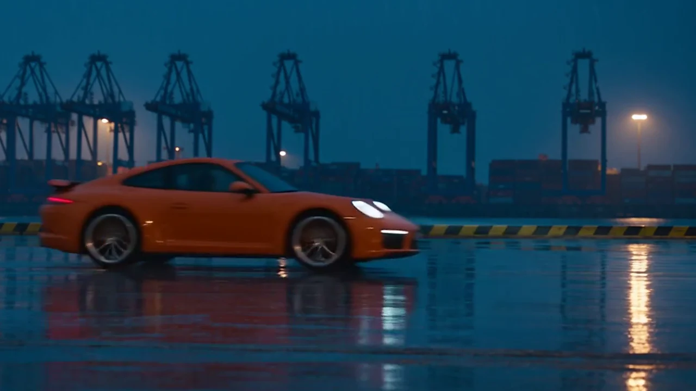

XIAOHUAN PRO / DESKTOP STUDIO
从灵感
到成片
剪视频、做图片、用 AI 探索画面。
三个工作台，接住创作的每一步。
WINDOWS 10 / 11 · 64 位
THE WORKBENCHES
三种创作方式。
用时间线掌控节奏，用图层打磨画面，用 AI 画布把参考图和想法变成下一步的素材。


AVAILABLE FOR WINDOWS
XIAOHUAN PRO / DESKTOP STUDIO
剪视频、做图片、用 AI 探索画面。
三个工作台，接住创作的每一步。
WINDOWS 10 / 11 · 64 位
THE WORKBENCHES
用时间线掌控节奏，用图层打磨画面，用 AI 画布把参考图和想法变成下一步的素材。

AVAILABLE FOR WINDOWS